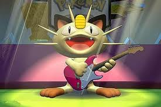
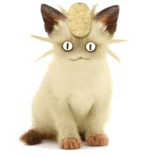
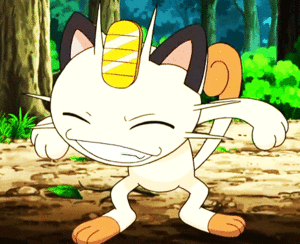

Meowth
 De: La Frikipedia, la enciclopedia extremadamente seria.
De: La Frikipedia, la enciclopedia extremadamente seria.
| De la serie bichos dentro de bolas:
|
| Meowth
|
|
|
| Nombre
|
Meowth
|
| Especie
|
Pokémon
|
| Apariencia
|
Un puto gato
|
| Hábitat natural
|
Ciudades en Kanto
|
| Localización
|
En la hierba próxima a ciudades
|
| Tipo
|
|
| Habilidad
|
Inexistente
|
| Pokemonización
|
Ya es un PKMN
|
| Número
|
Alto (por el 643)
|
 Meowth preparado para la marcha, aunque solo le falta algo... ¿Serán amigos?
inútil Pokémon de tipo normal, basado en un gato de la mala suerte. Ademas, es el pokémon que usaba el Team Rocket en sus años mozos, pero no les servia de nada, ni para luchar, solo se dedicaba a hablar.
Descripción
Básicamente es un gato con la peculiaridad de tener un cabezón de melón al estilo Stewie, unos ojos enormes, una moneda incrustada en la frente y el nabo los pies más largos que las manos. Su gran moneda incrustada produce muy buena suerte, debido a que es de oro, por otra parte, si trabaja para los malos, esa buena suerte pasa a la mala suerte. Esto es debido a que la maldad de ese pokémon acumulado durante los últimos 4 años, se suman 3 años más y ahora te darás cuenta de que "Siete años son mala suerte"
Habilidad
Su ataque más conocido es el Día de pago, hace que aparezcan monedas de su ojete la nada para que se forre el correspondiente entrenador. El resto de ataques son bastante patéticos corrientes, del tipo arañazo, mordisco, gruñido, golpes furia... (véase la tabla de movimientos). Parece ser también que es el único Pokémon capaz de hablar el idioma humano. Se entretiene buscando monedas por la noche.
En el Anime
Es un pokémon conocido por su aparición en el anime como miembro del Team Rocket, donde dada su inutilidad para pelear se dedica a dar estúpidas ideas para robar el Pikachu de Ash. Más tarde, Meowth, en ocasiones, se pierde en bosques con los pokémon de nuestros héroes. Pues estos deciden unir fuerzas, a pesar de ser enemigos, se ayudan para salir de los aprietos. Una vez pasa esto, Meowth sale del armario les engaña y vuelve con el Team Rocket para llevarse a Pikachu como de costumbre, solo que Ash utilizará su pokémon pokemonizado en un pájaro para agujerear el globo aerostático con su cara, aparte de que eso siempre les costa un cojón riñón arreglarlo.  Meowth ya ha salido de tu DS, ahora en 3D
Amigos y enemigos
Ataques
Meowth puede aprender los ataques de su tipo:
- Arañazo
- Golpes furia
- Gruñido
- Contoneo
- Salpicadura
- Chirrido
- Sorpresa
- Día de pago (su A.P. Ataque principal)
Hasta ahora los ataques por naturaleza han sido de tipo Siniestro: aun así los ataques son una mierda
- Mordisco
- Mofa
- Finta
- Maquinación
- Buena Baza
- Tajo Umbrío
- Afilagarras
Ahora empieza lo bueno, estos son los ataques que puede aprender por el tutor de movimientos:
- Rayo
- Trueno
- Cola férrea
- Látigo
- Tóxico
- Poder Oculto
- Vendetta
- Día soleado (no el de pago)
- Destello
- Danza lluvia
- Protección
- Come sueños
- Golpe aéreo
- Golpe cabeza
- Aguante
- Viento hielo
- Descanso (eso siempre viene bien)
- Daño secreto
NOTA: Aunque Meowth sea capaz de realizar estos ataques, el pokémon sigue siendo una birria, o al menos hasta que evolucione.
¿Sabías que...
- ...este pokémon paso a ser pokemonizado en la base mega-secreta de Rocket Team?
 Bailar o decir que NO se le da de pena
- ...Meowth evoluciona a Persian
- ...su evolución pasa a un Tigre o gato más grande de mierda que no sirve "pa naa"?
- ...Meowth tiene hermanos peculiares?
- ...Skitty, Glameow, Purrloin y Sneasel son como el, pero mejores?
- ...Meowth es una mierda de PKMN?
- ...yo tenia uno al Nv 23?
- ...pero más tarde lo liberé?
- ...Pikachu es su peor enemigo?
- ...el Meowth de Tyson hace referencia al gato con botas, sin embargo, no habla y es más furte que el Meowth original?
- ...si Meowth hablara menos ganaría a Arceus?
- ...y también a Caterpie?
- ...aunque de Chuck Norris no estoy seguro?
- ...algún día Meowth leerá este articulo?
- ...su numero favorito es el 69?
- ...se han visto varios Meowth merodeando por la ruta 11?
- ...atrapalo o se irá?
- ...no sabemos para que mierda quieren a pikachu si el Team Rpcket tiene un puto Meowth que habla?
- ...Sonic es más rapido que Meowth?
- ...pero más que Magikarp no?

|
|
|
Autor(es):
- Conan
- Gñapero Solitario
- Kuiree
Frikipedia 2005-2016, Licencia
GFDL 1.2 - Extraído por FrikiLeaks